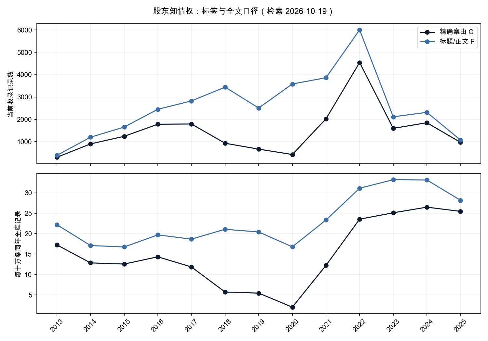
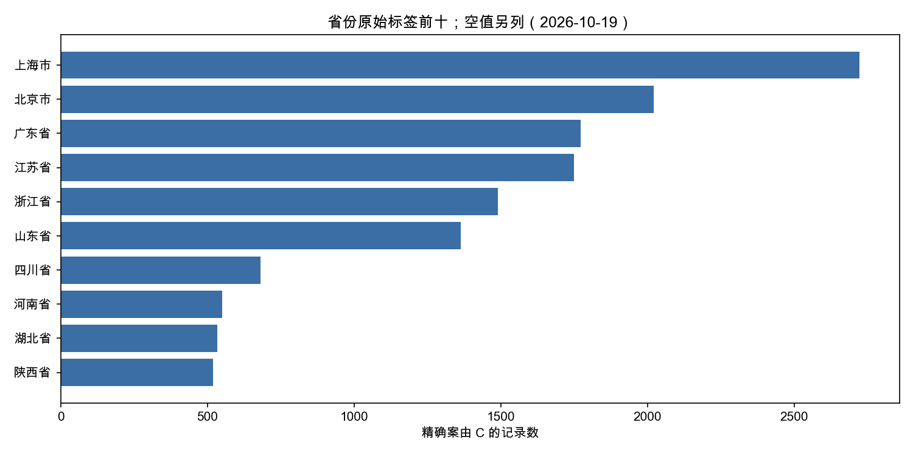

面向公司法论文与实证课题：先把标签、全文、日期与文书粒度分开。本页未完成主文编码和一二审归并，因此不提供裁判结果比例。
一、主题与集合：标签、文本候选各量什么
C为裸keyword字段cause精确等于“股东知情权纠纷”；F为标题或正文检索完整短语“股东知情权纠纷”，各字段对ik_smart与ik_max_word取逻辑并集；U为C∪F。所有正式集合排除bench测试批次。注意：F使用完整案由短语，不是较短的“股东知情权”；不能与旧研究的标题短词口径直接比较。
| 集合 | 记录数 | 案号以“号”结尾的记录 | 原始相异案号约 |
|---|---|---|---|
| C | 20,000 | 19,652 | 17,042 |
| F | 35,084 | 33,777 | 29,527 |
| U | 35,934 | 34,610 | 29,681 |
检索日期：2026-10-19；查询与原始聚合响应，键：C, F, U, C_repeat。记录为精确查询计数，原始相异案号为HLL估算。
C的20,000是本次_search精确命中与_count复读一致的索引计数；它恰为圆整数，原因尚未查明，不能据此证明完整覆盖或给它编造截断原因。F可以召回空标签批次，也可能是合同、执行或其他股东争议中援引的旧案；C也包含程序性文书。C∩F=19,150条，F−C=15,934条，C−F=850条。差集不是已确认漏标或错案。
原始caseNo的cardinality使用precision_threshold=40000，仅对案号以“号”结尾子集统计；未统一括号、空白、全半角或关联程序。不同案号可能属于同一纠纷，同一案号可有多份文书。不能把记录数减估值全部解释成重复，更不能与旧文章的规范化精确案号去重数混用。
match(cause.t, 股东知情权纠纷, operator=or)命中28,673,899条，其中精确C为20,000条。该比例只衡量标签归属，不是人工语义准确率；OR总数不能当作股东知情权案件量。
检索日期：2026-10-19；查询与原始聚合响应，键：labels, tokenized_OR, tokenized_OR_and_C。记录为精确查询计数，原始相异案号为HLL估算。
二、2013–2025：原始量与同年全库分母并列
归一化=该集合当年记录÷同年全库记录×100000，分子分母都用year并排除bench；不是人口、企业数或法院受理量。year派生自索引date，部分批次可能是公开或采集时间，不保证裁判落款年。

| year | C记录 | C相异案号约 | F记录 | 同年全库分母 | C/十万 | F/十万 |
|---|---|---|---|---|---|---|
| 2013 | 304 | 297 | 391 | 1,762,537 | 17.25 | 22.18 |
| 2014 | 903 | 874 | 1,202 | 7,033,956 | 12.84 | 17.09 |
| 2015 | 1,242 | 1,220 | 1,656 | 9,894,747 | 12.55 | 16.74 |
| 2016 | 1,783 | 1,755 | 2,451 | 12,443,177 | 14.33 | 19.70 |
| 2017 | 1,793 | 1,751 | 2,826 | 15,147,489 | 11.84 | 18.66 |
| 2018 | 932 | 745 | 3,442 | 16,331,967 | 5.71 | 21.08 |
| 2019 | 668 | 385 | 2,508 | 12,290,542 | 5.44 | 20.41 |
| 2020 | 428 | 278 | 3,583 | 21,359,050 | 2.00 | 16.78 |
| 2021 | 2,023 | 1,765 | 3,862 | 16,548,198 | 12.22 | 23.34 |
| 2022 | 4,542 | 3,124 | 6,004 | 19,292,669 | 23.54 | 31.12 |
| 2023 | 1,598 | 1,448 | 2,114 | 6,365,236 | 25.11 | 33.21 |
| 2024 | 1,850 | 1,765 | 2,315 | 6,984,435 | 26.49 | 33.15 |
| 2025 | 972 | 926 | 1,076 | 3,818,342 | 25.46 | 28.18 |
检索日期：2026-10-19；查询与原始聚合响应，键：C, F, corpus_years。记录为精确查询计数，原始相异案号为HLL估算。
总数减全部year桶合计的缺年记录：C 138、F 724、U 728；其他年份见附档。2018–2020标签曲线低谷首先要查批次标签覆盖。2023公开与收录收缩使分子分母均变化，归一化仍不能消除选择偏差，不把曲线当真实纠纷发生量或法律效果。
三、地域、程序与标题文类

| 省份原始标签 | C记录 | 占C |
|---|---|---|
| 上海市 | 2,722 | 13.61% |
| 空字符串 | 2,088 | 10.44% |
| 北京市 | 2,021 | 10.11% |
| 广东省 | 1,772 | 8.86% |
| 江苏省 | 1,750 | 8.75% |
| 浙江省 | 1,491 | 7.46% |
| 山东省 | 1,364 | 6.82% |
| 四川省 | 682 | 3.41% |
| 河南省 | 550 | 2.75% |
| 湖北省 | 535 | 2.67% |
| 陕西省 | 520 | 2.60% |
| 辽宁省 | 454 | 2.27% |
| 山西省 | 442 | 2.21% |
| 福建省 | 430 | 2.15% |
| 湖南省 | 400 | 2.00% |
| 安徽省 | 326 | 1.63% |
| 天津市 | 325 | 1.62% |
| 重庆市 | 243 | 1.21% |
| 广西壮族自治区 | 193 | 0.97% |
| 云南省 | 192 | 0.96% |
| 新疆维吾尔自治区 | 192 | 0.96% |
| 河北省 | 191 | 0.95% |
| 吉林省 | 181 | 0.91% |
| 江西省 | 164 | 0.82% |
| 贵州省 | 147 | 0.73% |
| 甘肃省 | 139 | 0.69% |
| 内蒙古自治区 | 138 | 0.69% |
| 黑龙江省 | 111 | 0.56% |
| 宁夏回族自治区 | 91 | 0.46% |
| 青海省 | 63 | 0.32% |
| 海南省 | 49 | 0.24% |
| 新疆维吾尔自治区生产建设兵团分院 | 12 | 0.06% |
| 西藏自治区 | 12 | 0.06% |
| 最高人民法院 | 8 | 0.04% |
| 新疆维吾尔自治区高级人民法院生产建设兵团分院 | 2 | 0.01% |
检索日期：2026-10-19；查询与原始聚合响应，键：C。记录为精确查询计数，原始相异案号为HLL估算。
空字符串与字段缺失保留，省份异形标签未合桶；法院集中管辖、批量程序与复本都可能改变地域分布。历史英文研究已提示集体改制相关批量诉讼，本轮没有重算最大当事人簇，不据此排除集中效应。相关英文方法研究有不同口径的历史分析，日期与分母须分别引用。
| 程序集合 | C记录 | 案号含初 | 案号含终 |
|---|---|---|---|
| 一审 | 11,990 | 11,962 | 2 |
| 二审 | 6,155 | 1 | 6,144 |
| 未映射 | 1,855 | 404 | 385 |
检索日期：2026-10-19；查询与原始聚合响应，键：C。记录为精确查询计数，原始相异案号为HLL估算。
一审合并1、0301、民事一审、一审、刑事一审、行政一审；二审合并2、0302、民事二审、二审、刑事二审、行政二审；其他未映射。案号初/终仅作诊断，未猜编码3的含义，也未跨程序合并；文书量比不是上诉率。原始程序桶保存在附档。
| 标题文类（按顺序互斥） | C记录 | 占C |
|---|---|---|
| 决定书 | 8 | 0.04% |
| 判决书 | 10,596 | 52.98% |
| 裁定书 | 6,986 | 34.93% |
| 调解书 | 94 | 0.47% |
| 通知书 | 116 | 0.58% |
| 标题未识别 | 2,200 | 11.00% |
检索日期：2026-10-19；查询与原始聚合响应，键：C。记录为精确查询计数，原始相异案号为HLL估算。
标题按判决书、裁定书、调解书、决定书、通知书顺序识别，后类排除前类，其余未识别。未用正文首行补型：部分批次正文首行会错误统一写“判决书”。标题分类仍是词面规则，不能替代逐案文种审计，程序性裁定更不能当实体拒绝查阅。
四、两组共现：账簿凭证与查阅争点
第一组为正文“会计账簿”“会计凭证”及并集；第二组为“查阅”“不正当目的”“商业秘密”“审计报告”。每项取双分词器并集，词间可以重叠，不相加。phrase是分词位置匹配，不等于逐字子串验证，更不是立场或裁判结果编码。
| 正文词/并集 | C命中 | C共现率 | F命中 |
|---|---|---|---|
| 不正当目的 | 8,763 | 43.81% | 12,833 |
| 会计凭证 | 8,547 | 42.73% | 13,608 |
| 会计账簿 | 11,992 | 59.96% | 19,545 |
| 商业秘密 | 2,155 | 10.78% | 3,111 |
| 审计报告 | 1,942 | 9.71% | 3,238 |
| 查阅 | 12,751 | 63.75% | 21,446 |
| 账簿凭证并集 | 12,167 | 60.83% | 19,961 |
检索日期：2026-10-19；查询与原始聚合响应，键：C, F。记录为精确查询计数，原始相异案号为HLL估算。
| year | C记录 | C账簿/凭证并集 | C内共现率 | F内共现率 |
|---|---|---|---|---|
| 2013 | 304 | 229 | 75.33% | 68.03% |
| 2014 | 903 | 582 | 64.45% | 57.32% |
| 2015 | 1,242 | 801 | 64.49% | 59.00% |
| 2016 | 1,783 | 1,031 | 57.82% | 54.06% |
| 2017 | 1,793 | 1,145 | 63.86% | 58.46% |
| 2018 | 932 | 418 | 44.85% | 61.07% |
| 2019 | 668 | 229 | 34.28% | 56.22% |
| 2020 | 428 | 68 | 15.89% | 53.11% |
| 2021 | 2,023 | 1,375 | 67.97% | 56.73% |
| 2022 | 4,542 | 3,055 | 67.26% | 60.71% |
| 2023 | 1,598 | 1,031 | 64.52% | 58.89% |
| 2024 | 1,850 | 1,095 | 59.19% | 57.62% |
| 2025 | 972 | 443 | 45.58% | 45.17% |
检索日期：2026-10-19；查询与原始聚合响应，键：C, F。记录为精确查询计数，原始相异案号为HLL估算。
“会计凭证”可能出现在诉请、公司拒绝理由、历史事实、法条或他案引述；“不正当目的”也可能由原告否认，而非由法院认定。空正文仍在总体分母中。本页不报告支持查阅比例、拒绝率或胜诉率。
法规背景可核对市场监管总局所载现行公司法第五十七条；本页只是以相关词构造研究变量。法规内容不说明本库每份文书适用该条，亦不能把year=2024直接切成实施前后组。
五、可复现方法与不可外推的边界
- 这是全量聚合，未抽样，也未声称语义纯度。若需人工复核，应按dataset分层，记录random_score种子和n，保留批内平手偏差及编码表；本页没有凭空补样本。
- 全文body的完整案由短语在ik_smart下为0条，在ik_max_word下为33,187条。这是分析器差异，零命中不能直接说不存在案件；F取两字段双分析器逻辑联集。
- 正文空白、公开事由占位、缺段或截断会改变共现；exists(body)不证明可用全文。全量补修不保证每份完整，本轮未实读正文完整性、不报完整率。
- 案由缺失和文本引述影响C/F两套分母；记录数不是独立纠纷，HLL原始案号不是规范化精确去重。不要把本页与历史英文页的案号估算或标题短词数直接相减。
- 研究新法须逐份核落款日期、争议发生时间与适用条款，再建立程序关联。索引year只用于收录画像，不能识别政策因果。
- 归一化仅校正同年收录规模，不消除公开选择、批次覆盖或重复。任何细分样本少于30，无法得出统计结论。
六、附录：查询、聚合与引用
judgments索引，size:0、track_total_hits:true；所有正式响应未超时、failed shards=0。C复读_count一致。附档仅含查询及汇总，无姓名、案号明细或正文。每个表的来源键对应附档请求与返回；正式引用请带检索日期、集合、案号处理及统计限制。
{
"C": {
"bool": {
"filter": [
{
"term": {
"cause": "股东知情权纠纷"
}
}
],
"must_not": [
{
"term": {
"dataset": "bench"
}
}
]
}
},
"F": {
"bool": {
"filter": [
{
"bool": {
"should": [
{
"bool": {
"should": [
{
"match_phrase": {
"title": {
"query": "股东知情权纠纷",
"analyzer": "ik_smart"
}
}
},
{
"match_phrase": {
"title": {
"query": "股东知情权纠纷",
"analyzer": "ik_max_word"
}
}
}
],
"minimum_should_match": 1
}
},
{
"bool": {
"should": [
{
"match_phrase": {
"body": {
"query": "股东知情权纠纷",
"analyzer": "ik_smart"
}
}
},
{
"match_phrase": {
"body": {
"query": "股东知情权纠纷",
"analyzer": "ik_max_word"
}
}
}
],
"minimum_should_match": 1
}
}
],
"minimum_should_match": 1
}
}
],
"must_not": [
{
"term": {
"dataset": "bench"
}
}
]
}
},
"账簿凭证并集": {
"bool": {
"should": [
{
"bool": {
"should": [
{
"match_phrase": {
"body": {
"query": "会计账簿",
"analyzer": "ik_smart"
}
}
},
{
"match_phrase": {
"body": {
"query": "会计账簿",
"analyzer": "ik_max_word"
}
}
}
],
"minimum_should_match": 1
}
},
{
"bool": {
"should": [
{
"match_phrase": {
"body": {
"query": "会计凭证",
"analyzer": "ik_smart"
}
}
},
{
"match_phrase": {
"body": {
"query": "会计凭证",
"analyzer": "ik_max_word"
}
}
}
],
"minimum_should_match": 1
}
}
],
"minimum_should_match": 1
}
}
}检索日期：2026-10-19；查询与原始聚合响应，键：C_repeat, F_body_ik_smart, F_body_ik_max_word。记录为精确查询计数，原始相异案号为HLL估算。
常见问题
统计的是全国股东知情权案件总数吗？
不是。C为精确案由20,000条，F为标题或正文完整案由短语候选35,084条，并集U为35,934条；都是当前索引记录。圆整数20000原因未明，不是官方总量或已证实完整覆盖。
账簿与凭证共现可以当作法院支持查阅的比例吗？
不可以。C内12,167条正文命中至少一词，只是词面共现；可能是诉请、抗辩、法条或他案转述，没有编码裁判主文。
为什么案由与全文的年度走势不同？
标签缺失与批次构成会改变召回。全文可包含其他案由的引用，精确标签也可能没有可用正文。两条曲线不能互相替代，更不能直接当作真实诉讼发生趋势。
相异案号是否等于独立纠纷？
不等于。本页以案号以号结尾的格式子集，对原始caseNo作HLL估算；未归一化括号空格，未关联一审二审，不能与历史规范化案号数混比。
怎样申请论文数据与逐案清单？
通过数据报告服务先约定检索口径、日期核验、程序关联、正文可用性与人工编码，再确定交付和验收。本页不提供胜诉率或新法因果结论。
文书查 · 深圳星谱网络科技有限公司。仅供研究方法参考，不构成法律意见。检索日期：2026-10-19。